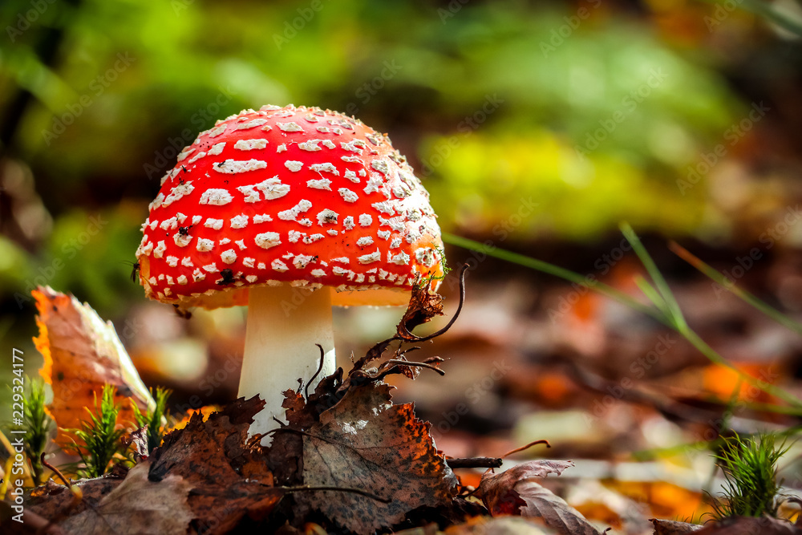
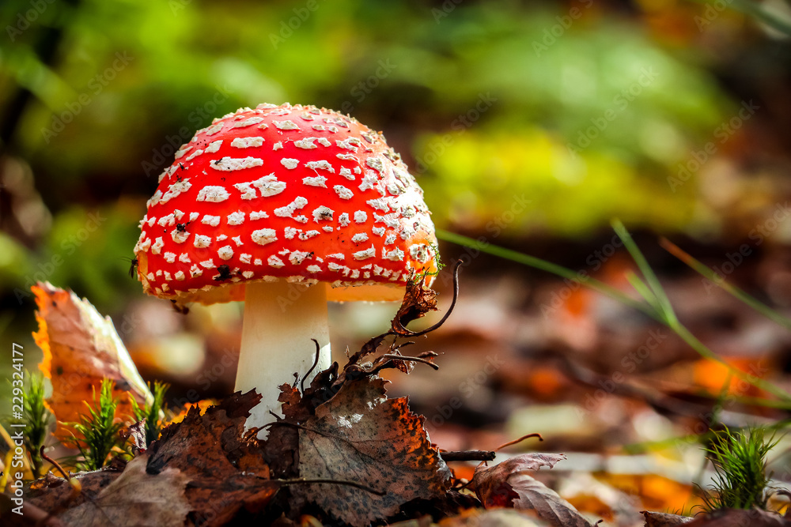

Amanita muscaria
Iconic for its red cap with white warts, this species is often depicted in folklore and art. Amanita muscaria, commonly known as the fly agaric or fly amanita, is a basidiomycete fungus of the genus Amanita. It is a large white-gilled, white-spotted mushroom typically featuring a bright red cap covered with distinctive white warts. It is one of the most recognisable fungi in the world. A muscaria exhibits complex genetic diversity that suggests it is a species complex rather than a single species. It is a widely distributed mushroom native to temperate and boreal forests of the Northern Hemisphere, now also naturalised in the Southern Hemisphere, forming symbiotic relationships with various trees and spreading invasively in some regions.
Its name derives from its traditional use as an insecticide. It can cause poisoning, especially in children and those seeking its hallucinogenic effects, due to psychoactive compounds like muscimol and the ibotenic acid; however, fatal poisonings are extremely rare. Boiling it reduces toxicity by removing water-soluble ibotenic acid into the discarded water. Drying converts ibotenic acid into muscimol, lowering toxicity but retaining psychoactive effects. Some cultures use it as food after preparation. Indigenous peoples of Siberia used A. muscaria as an inebriant and entheogen. It has been controversially linked to Santa Claus, Viking berserkers, Vedic soma, and early Christianity, though evidence is sparse and disputed. Its rise in the 2020s as a legal hallucinogen alternative has led to Food and Drug Administration scrutiny. A. muscaria has appeared in art and literature since the Renaissance, becoming iconic in fairy tales, children’s books, and media like the Super Mario games and Disney’s Fantasia. It has also influenced literary depictions of altered perception—most notably in Alice’s Adventures in Wonderland—and has been referenced in novels by writers including Oliver Goldsmith, Thomas Pynchon, and Alan Garner.